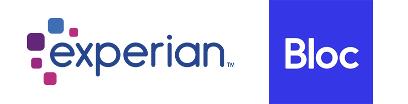
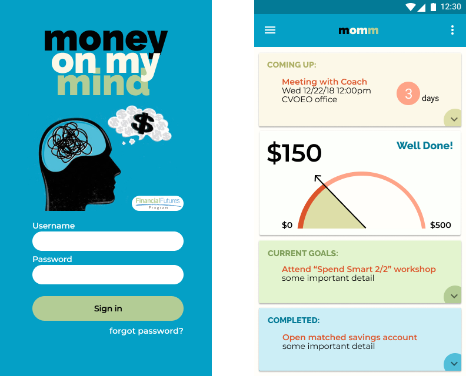

Money on my Mind
A mobile app created for the Champlain Valley Office of Economic Opportunity, to facilitate completion of their Financial Futures program.
Introduction
summary
Money on my Mind is a mobile app aimed at improving the completion rate for participants in the ReachUp/Financial Futures Program. This program is offered through the Champlain Valley Office of Economic Opportunity.
My role: Principal Designer. Design Team of One. UX Research, UX Design, Visual Design, Branding.
Deliverables: User Research, Competitive Analysis, Wireframes, Usability Testing, Preference Testing, High Fidelity Mock Ups, Animation, Prototype.
Tools Used: Figma, Photoshop, Illustrator, InVision, UsabilityHub, Draw.io, Pen & Paper.
Timeframe: 3 months in 2019
The Problem
The Financial Futures Program is a resource available to low - moderate income Vermonters. The program provides a range of capacity building services. Participants receive an incentive stipend for accomplishing incremental milestones in the program. Unfortunately many participants were routinely missing out on these benefits. We proposed a free mobile app to address some of the issues.
Constraints: The only information the app can access, is a daily .csv file from the program’s Outcome Tracker system. The app would have no capability to edit or amend the information in Outcome Tracker. Delivering value within these constraints was my challenge for this project.
The Ask:
- Help participants stay in the program, and more effectively reach program milestones and goals.
- Come up with a design that creates maximum value within these limited constraints.
- Be “playful” and “fun.”
The Solution
Money on my Mind:
- A mobile app for iOS and Android.
- Part educational roadmap, part financial tracker.
- Simple, single-pane-of-glass dashboard.
- Set and pause push notifications for reminders about goals in progress.
- Party when goals get marked complete by coaches.
- Goals “submitted” as complete are marked as “pending approval” while waiting for tracker update.
- A jumping piggy bank!
My Process
Research
Discovery activities:
- Reading all the printed and marketing materials for the program, to fully understand it's structure.
- Interviews with program director and coaches (no access to participants for confidentiality reasons).
- Our Field Studies with coaches, watching them using the milestone tracker.
Key Insights:
Though I had no access to actual users, I got a lot of second-hand information from my discussions with their coaches. This helped identify the main barriers to completion:
- Forgetting when scheduled meetings, classes or deadlines were.
- Losing track of progress made, their potential financial reward and the steps needed to finish.
Competitive analysis
Even when there are no direct competitors, I often like to review other products that I believe are trying to solve similar problems.
Two apps that I looked at were Experian (for financial reporting) and Bloc.io (for educational roadmap) inspiration.
Results of my analysis:
Experian:- The experian app featured a “snippet” of all relevant information, on the landing dashboard. It was organized in a linear sequence, with the option to deep-dive into each section. There was also a summary “score” at the very top, that related to the content below.
Bloc.io: Bloc was an educational program with a nice mobile dashboard. I liked how they represented “progress” and “position” in relation to their final goal.
Wireframes
I started with low fidelity wireframes, incorporating some ideas from my competitive analysis, as well as the needs identified by talking to coaches.
My goal was to simplify the information architecture as much as possible and present a summary of relevant information on a “single-pane-of-glass.”
Usability Testing
Some quick usability testing with the initial wireframes, informed a couple of changes before we moved on to visual design.
- Include the location information for upcoming meetings or classes.
- Be more explicit about the goal amount that can be earned.
Visual Design
Round one:
The Design Brief asked for something “playful and fun.” So, I created some proposed mock-ups of a login screen to preference test for visual design direction.
Though the client liked our designs, they had a brand graphic already in use on many print materials that they wanted to incorporate instead.
Round two:
I created more iterations to preference test, incorporating their requested graphic:
Option "A" emerged as the clear winner of our preference tests.
Color Palette:
The selected login screen informed the color palette and direction for the rest of the app. The "Playful and fun" directive urged me to play with color. I used darker shades for text and lighter tints for backgrounds.
Dashboard Design:
- I carried "playful and fun" over to the single-pane dashboard design as well.
- To utilize space more efficiently, we changed the donut to a meter.
- The meter opened up space for some positive Messaging.

Design Reviews
Before finalizing designs, I conducted a round of reviews with stakeholders, engineering and product management. This led to a few more alterations:
- Engineering didn’t believe we could populate the “coming up” card. So, we needed to remove that for now.
- The client wanted to use the Financial Futures logo.
- The client wanted a way for participants to get reminders. So we made an option for the user to set and control scheduling reminders, independent of the outcome tracker.
- Users could also mark a goal complete, in order to pause the reminder, even if it didn’t interact with the actual tracker.
- One last request... how can we make this even more engaging and “fun”?
The Fun
One topic that kept coming up since the early visual design drafts:
- I just really loved the pig!
- ...so, we brought her back, made her jump and collect coins, throwing a “party” whenever a goal is completed.
- Now that’s fun!
Conclusion
Impact
- Coaches reported the rate of missed appointments dropped by 35%.
- The number of participants that completed the program increased by 80%.
- Those participants that didn’t complete the program, still earned 25% more than those who had not completed in the past.
- Participants loved the jumping pig!